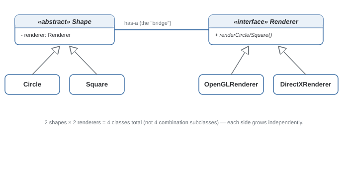

Bridge Pattern
Decouples an abstraction from its implementation so the two can vary independently, instead of exploding into one class per combination.
Theory
The problem, in plain terms
You're building Shape classes — Circle, Square — each needing to render using different graphics APIs — OpenGL, DirectX. Do this with inheritance and you get OpenGLCircle, DirectXCircle, OpenGLSquare, DirectXSquare — a class per combination. Add a third renderer or shape, and the count multiplies again.
Bridge splits the two dimensions into two hierarchies connected by composition instead of inheritance. A Shape holds a reference to a Renderer and delegates the drawing work to it. Adding a shape means one new class; adding a renderer means one new class — addition, not multiplication.
How it's built
Two hierarchies: the abstraction (Shape, with subclasses like Circle) holds a reference to an implementor interface (Renderer, with implementations like OpenGLRenderer). The abstraction's methods call through to the implementor rather than implementing low-level details itself. Both sides can be extended independently.
Reach for Bridge specifically when you can name two independent dimensions that both need to grow — not just because "an object holds another object" looks similar to the diagram.
Confusing this with Adapter. Bridge is designed in upfront to prevent class explosion; Adapter is retrofitted after the fact to fix an existing incompatibility. Same shape of diagram, different intent and timing.
Where it bites you
Bridge adds indirection and two hierarchies where a single class might have sufficed. If you only ever have one implementor with no real plan to add more, the split is unnecessary complexity — it earns its keep specifically when both dimensions are genuinely expected to grow independently.
Diagram

When to Use
- Two independent dimensions of variation exist and inheritance would force a class per combination.
- You want to add new variants on either side without touching the other.
- You need to swap the implementation at runtime, not just at compile time.
- There's really only one dimension, or the second isn't genuinely expected to grow.
- The combination count is small and stable — plain inheritance may be simpler to read.
Real-World Examples
- JDBC — application code talks to the generic API while vendors provide different driver implementations; swapping databases doesn't mean rewriting app code.
- Java AWT/Swing's peer architecture — UI components bridged to platform-specific "peer" implementations doing native rendering per OS.
- Device / Remote Control examples — a RemoteControl works with any Device (TV, radio) without a new remote class per device.
- SLF4J — the logging API is decoupled from which engine (Logback, Log4j2) actually writes output.
- Rendering engines — a shape/scene graph API bridged to different rendering backends without duplicating shape logic per backend.
Interview Questions
Click a question to reveal the answer.
What specific problem does Bridge solve that plain inheritance doesn't?
Class explosion from two independent dimensions of variation. If shapes and renderers each vary independently and you model them with one inheritance tree, you need one class per combination. Bridge splits them into two hierarchies connected by composition, so you need one class per shape plus one per renderer — addition instead of multiplication.
How is Bridge different from Adapter, given both delegate to another object?
Timing and intent. Adapter is retrofitted after the fact to make an existing, incompatible interface work. Bridge is designed in from the start, specifically so two hierarchies can vary independently — there's no pre-existing incompatibility being worked around.
Can the implementor side of a Bridge be swapped at runtime?
Yes — since the abstraction holds a reference to the implementor via composition, not inheritance, you can swap in a different concrete implementor object at runtime, not just at compile time via a fixed class hierarchy.
Give a concrete example of when NOT to use Bridge.
If you have exactly one shape type and one rendering engine with no realistic plan to add more, splitting into two hierarchies adds indirection for no payoff — a single concrete class is simpler and just as correct. Bridge earns its complexity specifically when both dimensions are expected to grow.
Code & Output
Same pattern, four languages. Every output shown here was captured from a real run.